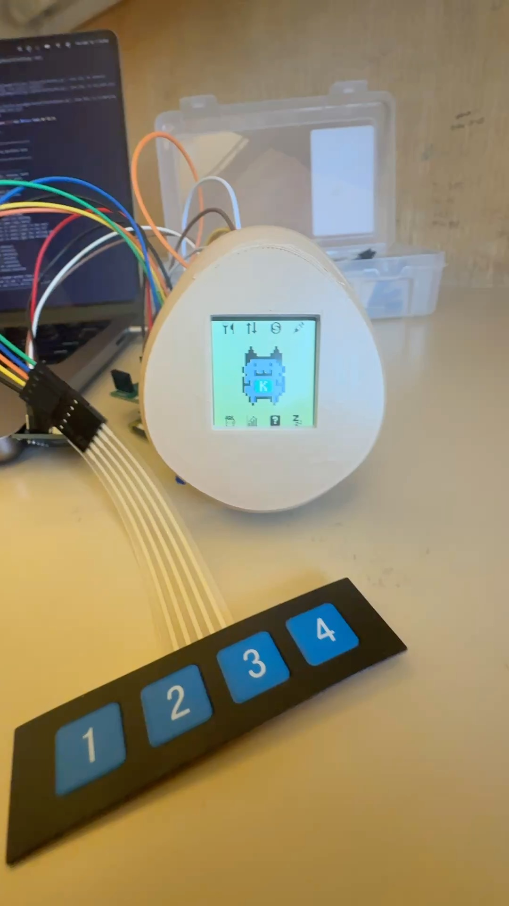
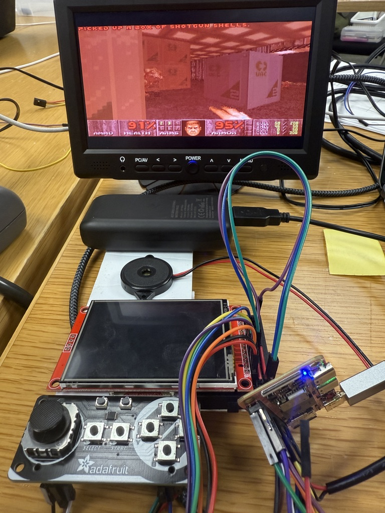
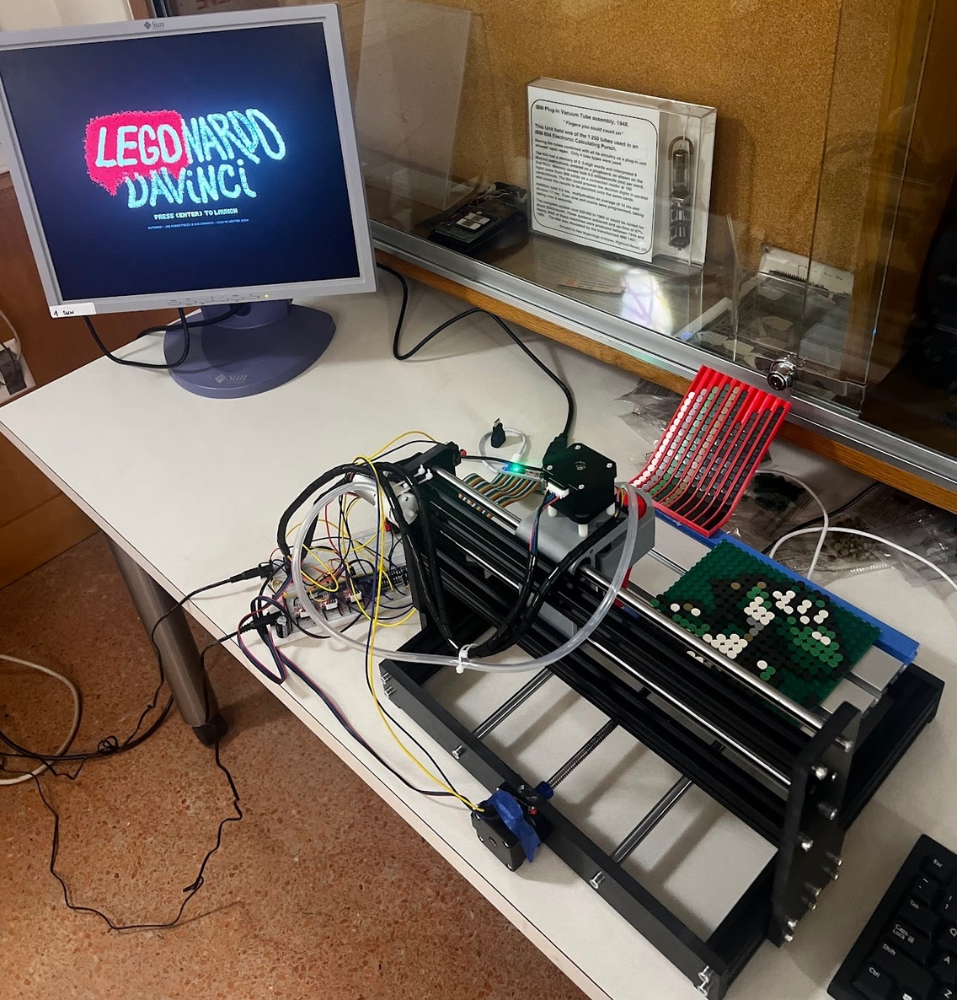
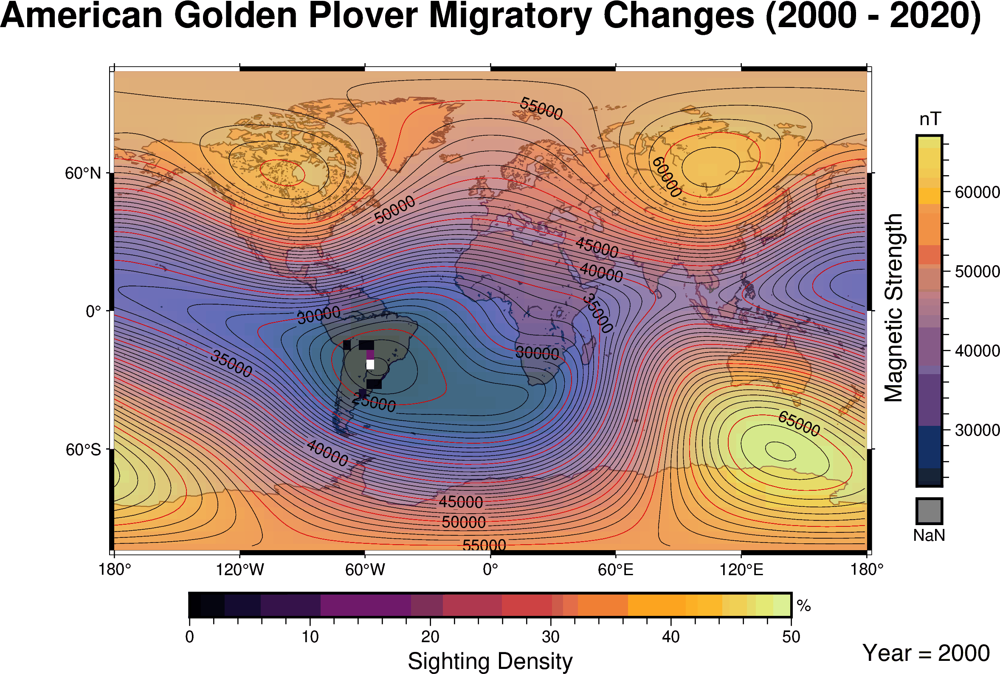

Hi, I'm Joe, a junior at Stanford University majoring in Computer Science (Systems Track), with a strong interest in low-level systems programming and AI hardware design! I'm currently exploring a potential minor in Mathematics or Electrical Engineering.
Platform Architecture Team -- Work TBD.
Section Leading for "Computer Systems from the Ground Up." Assisting students in hardware labs and holding office hours to debug bare-metal C, Assembly, and circuit logic.
Developed and optimized drivers for I2C, I2S, SPI, and DMA, integrating 12+ peripherals. Redesigned APIs into a consistent HAL and extended the MangoPi platform for RISC-V.
Conducted weekly discussion sections for 10+ students. Oversaw biweekly grading sessions to provide 1-on-1 feedback and debugged student code during office hours.
Analyzed 50M+ data points investigating Earth’s magnetic field and bird migration. Created geographic visualizations using Python (Pandas, Seaborn) and presented findings at national competitions.
B.S. Computer Science (Systems Track)
Minor in Electrical Engineering
High School Diploma (Valedictorian)
Rank: 1/361 • VP of Engineering Club • Varsity Track & XC
Engineered a bare-metal Tamagotchi OS for the Raspberry Pi Zero, linking the virtual pet's survival directly to live Kalshi prediction market portfolios.
Bridged the embedded hardware to a REST API via a custom 921600-baud UART-to-Python pipeline. Developed custom SPI and bit-banged I2C drivers, and extended a FAT32 filesystem for persistent state storage.

Ported the classic 1993 DOOM to a bare-metal RISC-V system (MangoPi), eliminating all OS dependencies by embedding game assets directly into the binary.
Engineered low-level drivers utilizing SPI for the LCD framebuffer and I2S for DMA-driven audio. Architected a custom C standard library (libc) from the ground up.

Designed and programmed a bare-metal device that prints user-loaded images via LEGO blocks. Developed a complete back-end in C and Python on a RISC-V MangoPi.
Rewired and integrated sensors/motors to precisely position LEGO pieces in 4.8mm x 4.8mm slots.

Conducted innovative analysis of datasets containing millions of entries to track bird migration. Developed over 100 interactive geospatial maps with PyGMT and Seaborn.
Wrote a professional research manuscript and presented findings; won at national competitions, including Regeneron STS.

Developed a high-performance GPU kernel to compute histograms on an NVIDIA H100, achieving one of the fastest runtimes in the class (21x speedup over baseline).
Built a fully functional TCP implementation in C++ capable of communicating with real Linux TCP stacks. The system ensures reliable byte-stream delivery over unreliable networks (IP) by handling packet loss, reordering, and flow control.
Note: Source code is private b/c Honor Code.